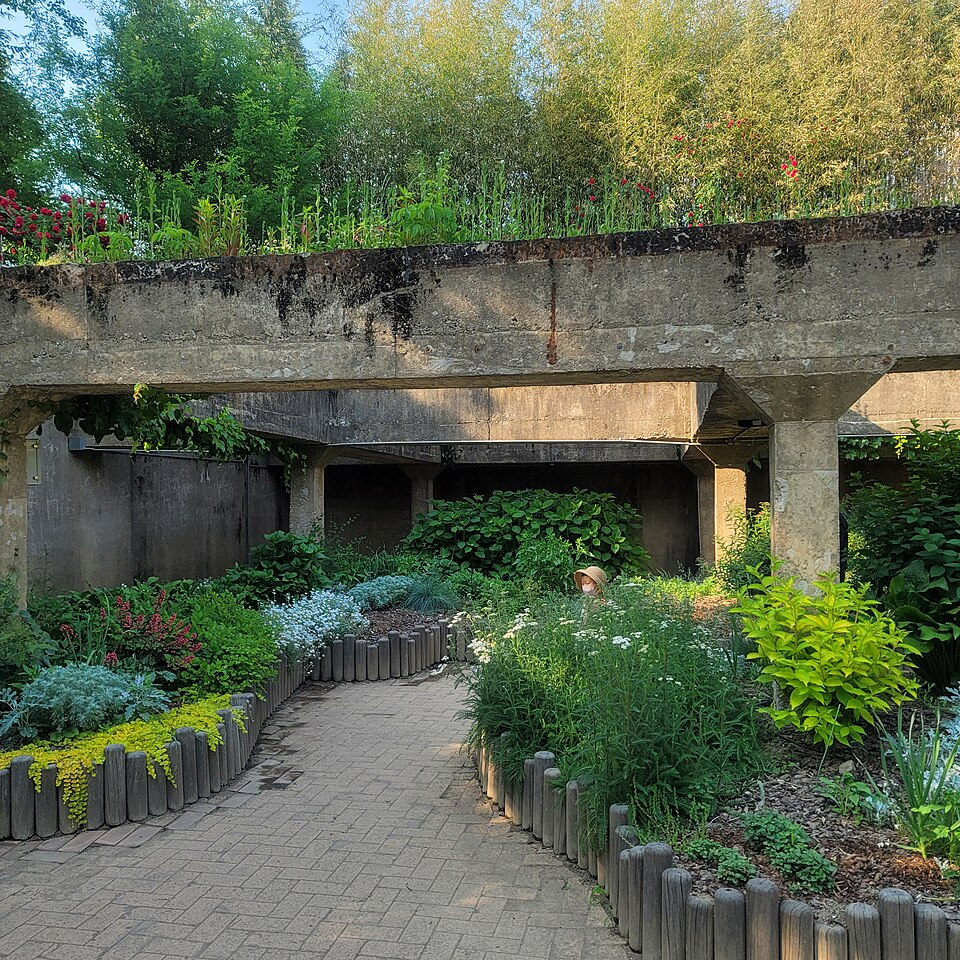
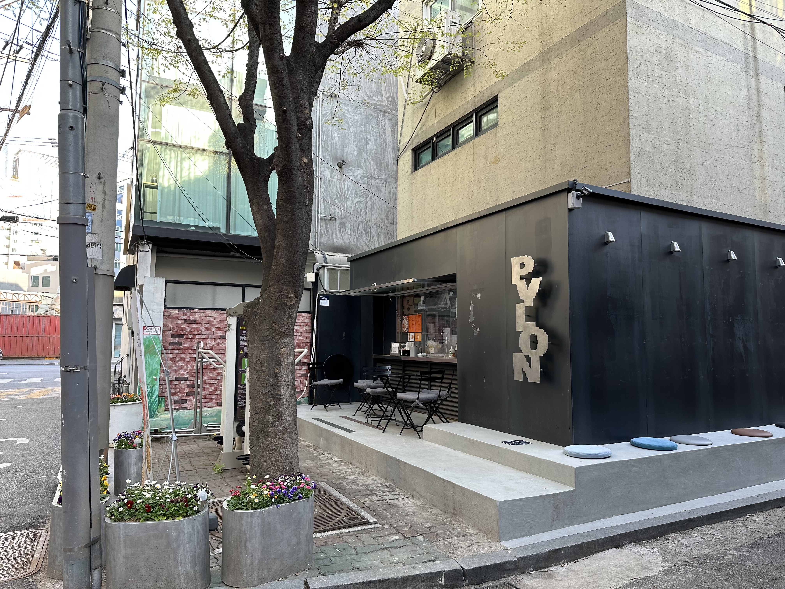
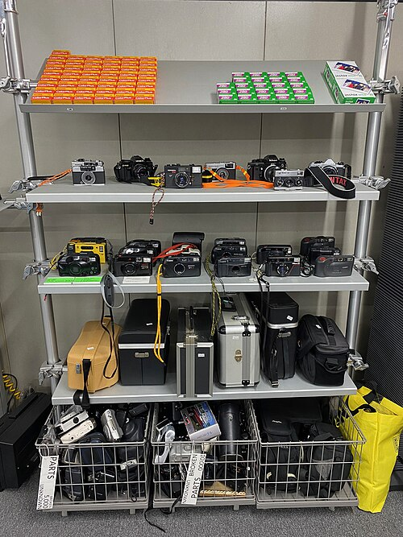
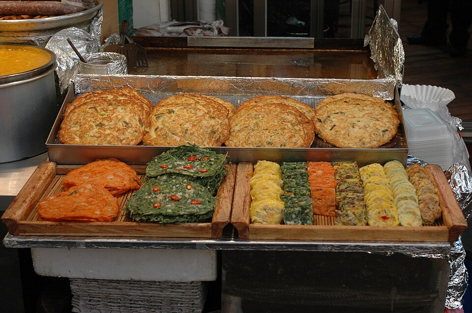

서울숲
촬영: CHO woohyuck · 2022-05-21
Wikimedia Commons 원본·저작자 정보 · CC BY-SA 4.0
.jpg){kind=link}
원본 또는 Wikimedia 제공 축소본 사용. 화면에서 CSS로 비율에 맞게 잘라 표시. 사진 보정 없음. CC BY-SA 사진의 표시용 변경에도 같은 라이선스 적용.
실제 장소를 촬영한 공개 사진을 사용했습니다. 과거 촬영 자료로 현재 영업·메뉴·현장 상태를 보장하지 않습니다. 카페와 상점은 출처에 공개된 지역 설명으로 표시하며 확인되지 않은 상호를 붙이지 않았습니다. 사진 제공자와의 제휴·추천을 의미하지 않습니다.

촬영: CHO woohyuck · 2022-05-21
Wikimedia Commons 원본·저작자 정보 · CC BY-SA 4.0
원본 또는 Wikimedia 제공 축소본 사용. 화면에서 CSS로 비율에 맞게 잘라 표시. 사진 보정 없음. CC BY-SA 사진의 표시용 변경에도 같은 라이선스 적용.

촬영: CartoonChess · 2023-04-09
Wikimedia Commons 원본·저작자 정보 · CC BY-SA 4.0
원본 또는 Wikimedia 제공 축소본 사용. 화면에서 CSS로 비율에 맞게 잘라 표시. 사진 보정 없음. CC BY-SA 사진의 표시용 변경에도 같은 라이선스 적용.

촬영: Sgroey · 2024-08-21
Wikimedia Commons 원본·저작자 정보 · CC BY-SA 4.0
원본 또는 Wikimedia 제공 축소본 사용. 화면에서 CSS로 비율에 맞게 잘라 표시. 사진 보정 없음. CC BY-SA 사진의 표시용 변경에도 같은 라이선스 적용.

촬영: Pfc. Bo Park, 2ID PAO, US Army · 2008-07-10
Wikimedia Commons 원본·저작자 정보 · Public domain (US federal government work)
원본 또는 Wikimedia 제공 축소본 사용. 화면에서 CSS로 비율에 맞게 잘라 표시. 사진 보정 없음. CC BY-SA 사진의 표시용 변경에도 같은 라이선스 적용.